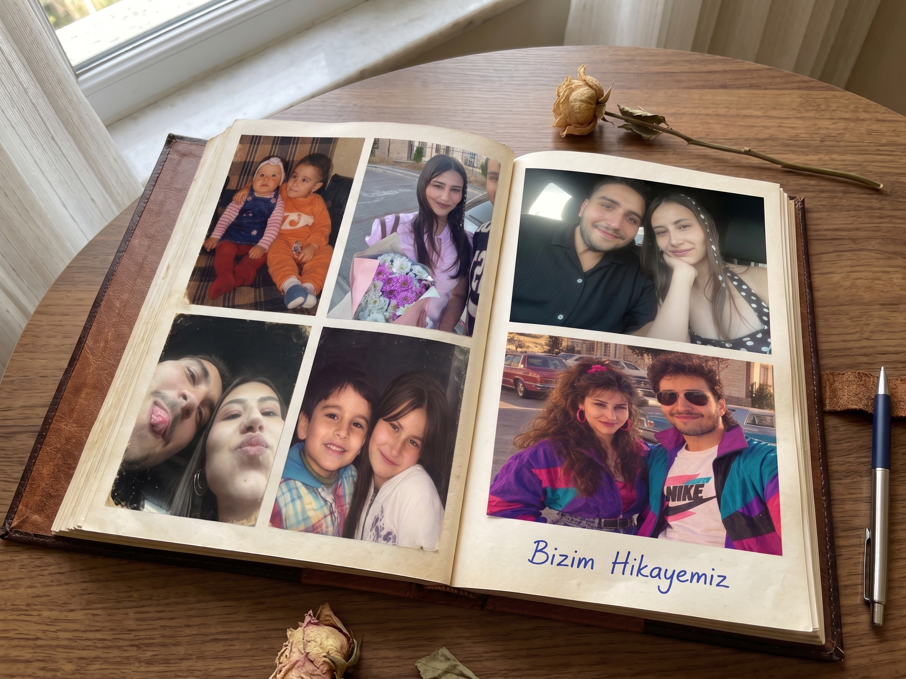

Efoşla İcloşşş...
Ben de seni çok özledim!
Şu an yanında olamasam da, kalbim her saniye seninle atıyor.
Aramızdaki kilometreler sadece haritadaki çizgilerden ibaret.
Gözlerini kapat ve sana sımsıkı sarıldığımı hisset.
Çok yakında bu fotoğraf karesindeki gibi yine yan yana olup ıhığ ıhığ diye gülüşücez icloşum.